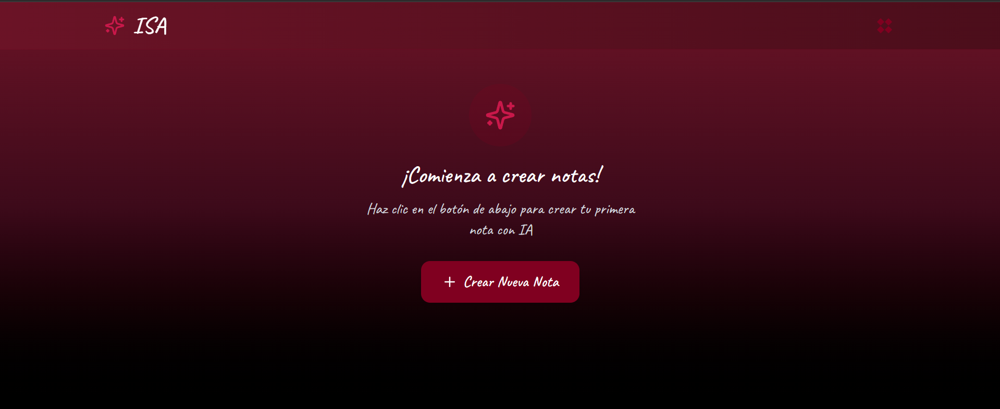
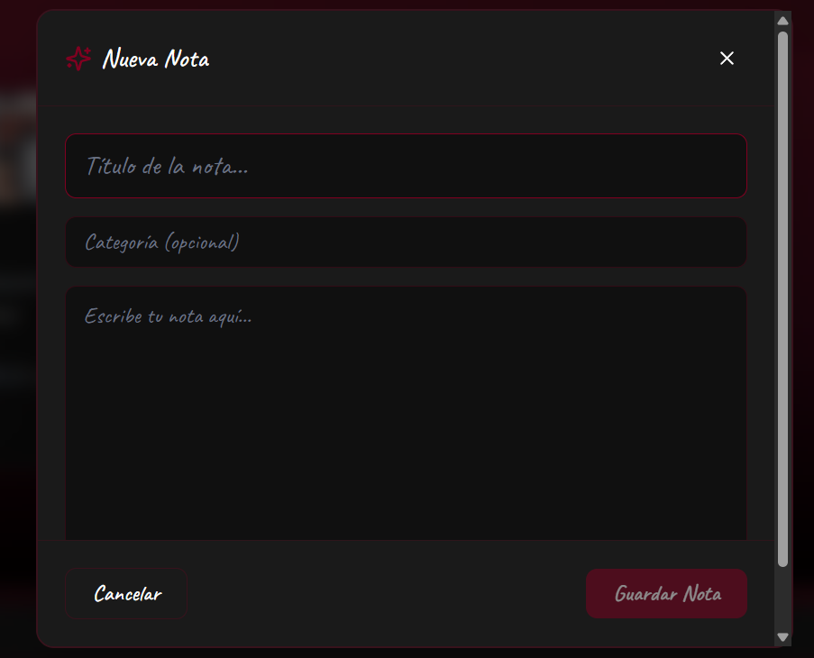
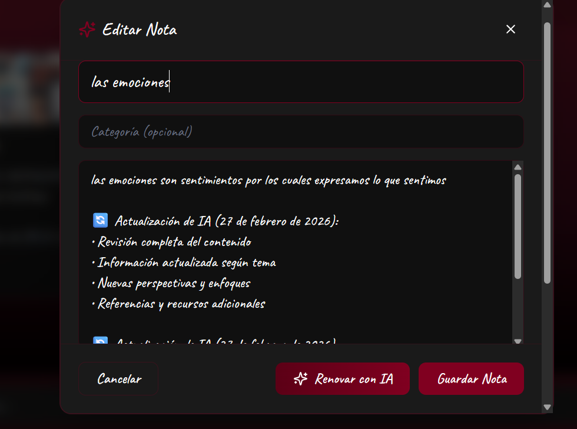
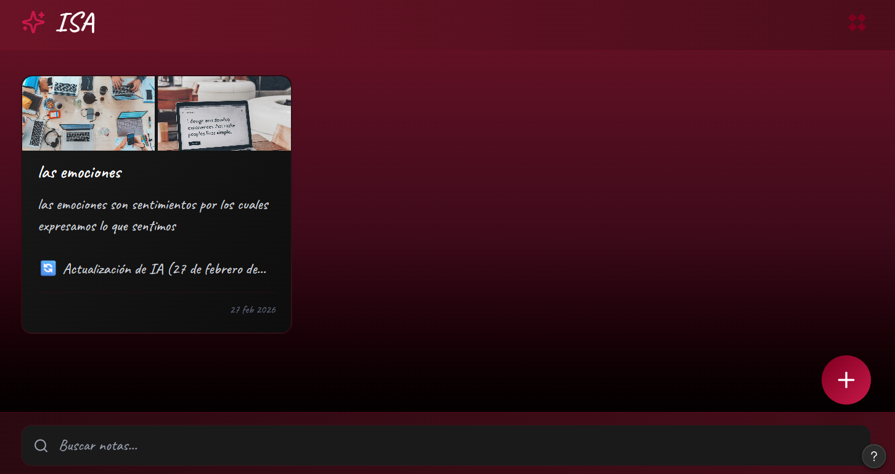
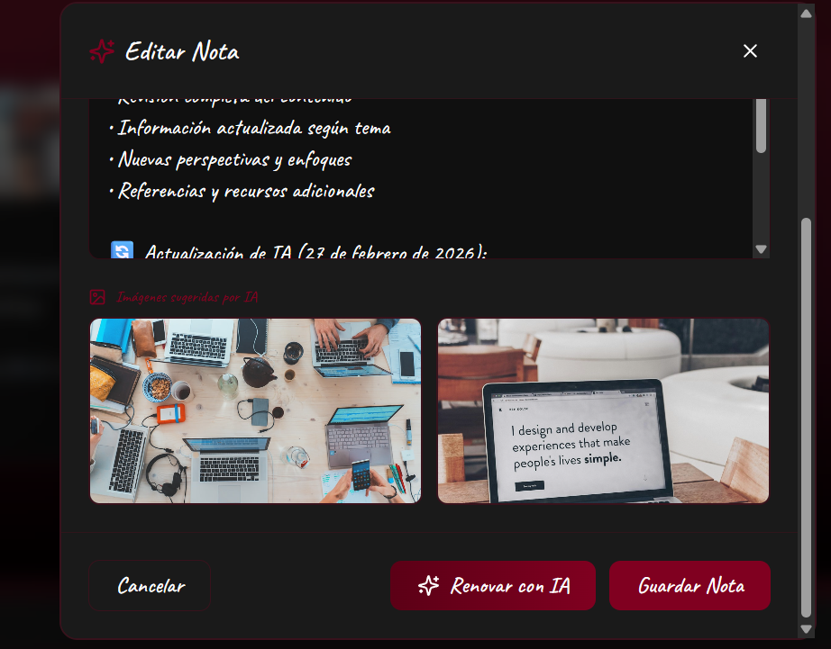

Descripcion de la app y su uso ilustrado

La primera imagen muestra la pantalla principal de la aplicación al momento de ser descargada y abierta por el usuario. En esta vista se encuentra el botón “+”, ubicado estratégicamente para permitir la creación rápida de nuevas notas. En la parte superior derecha se observan íconos en forma de rombos que permiten organizar y ordenar las notas de diferentes maneras, facilitando la gestión y visualización del contenido almacenado.
La segunda imagen representa la interfaz de creación de una nota. En esta sección el usuario puede ingresar el título de la nota, seleccionar una categoría de manera opcional y escribir el contenido principal. Una vez guardada, la inteligencia artificial integrada en la aplicación complementa automáticamente la información agregando mejoras en el texto y, cuando es necesario, incorporando imágenes relacionadas para enriquecer el contenido.


La tercera imagen muestra el momento en que el usuario ya ha redactado su contenido. En esta etapa, la aplicación ofrece dos opciones principales: guardar la nota tal como fue escrita o complementarla utilizando la inteligencia artificial. Esta función permite optimizar y ampliar la información antes de su almacenamiento definitivo.
La cuarta imagen presenta la vista de una nota ya guardada. Desde esta sección, el usuario tiene la posibilidad de editar o eliminar la nota, así como crear una nueva. En la parte inferior de la pantalla se encuentra un buscador que facilita localizar notas específicas de manera rápida y eficiente.


La quinta imagen muestra el proceso de edición de una nota existente. En esta etapa, el usuario puede modificar el título, el contenido o cualquier otro elemento de la nota. Una vez realizados los cambios, la inteligencia artificial actualiza automáticamente la información para mantener la coherencia, claridad y calidad del contenido.
Con estas ilustraciones se explica paso a paso cómo funciona la aplicación ISA.